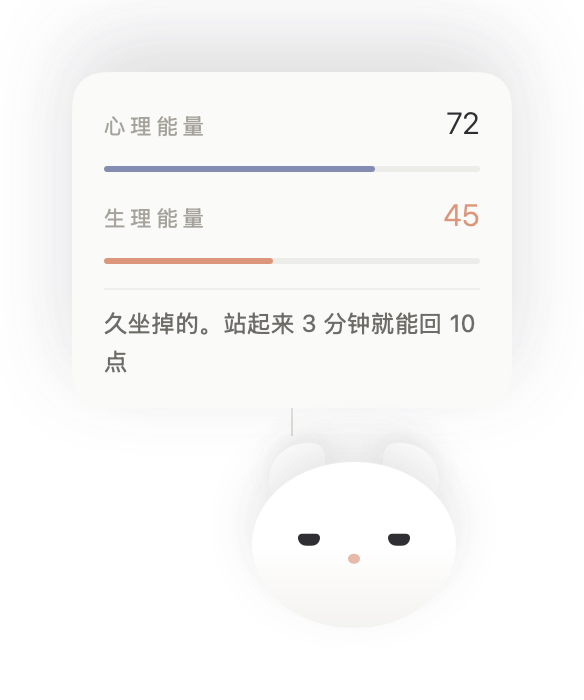
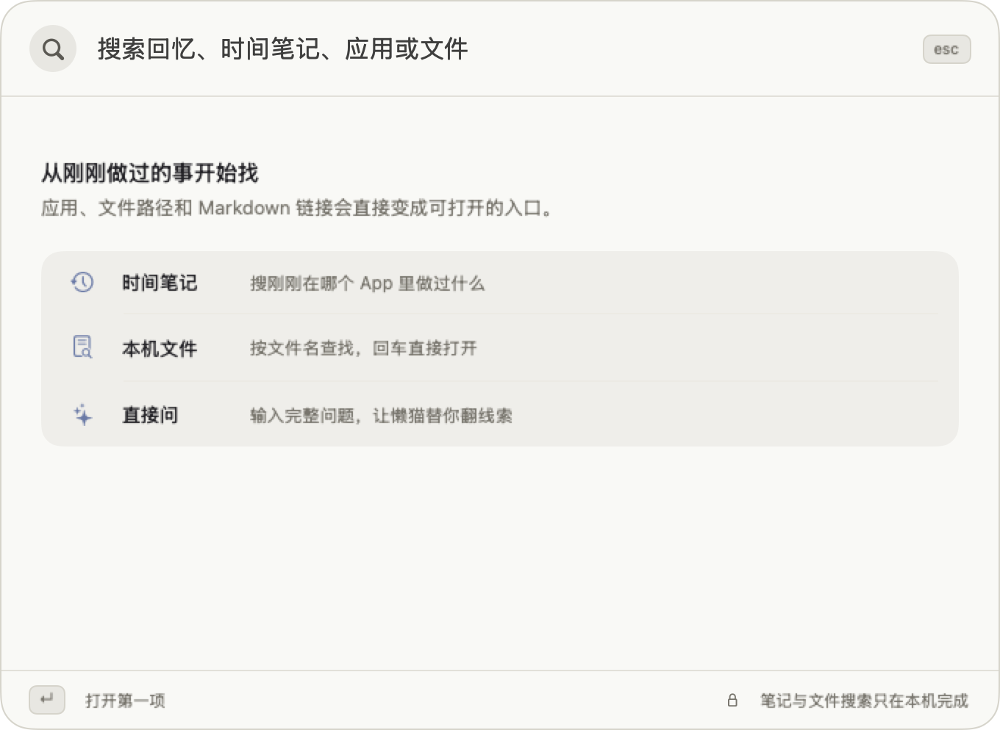
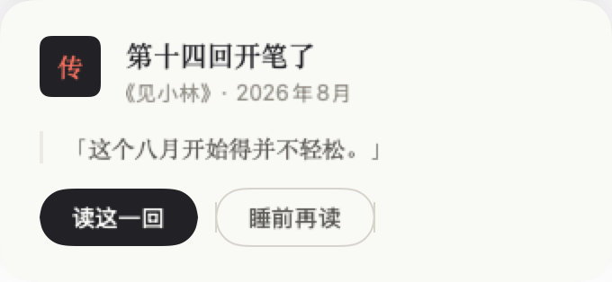
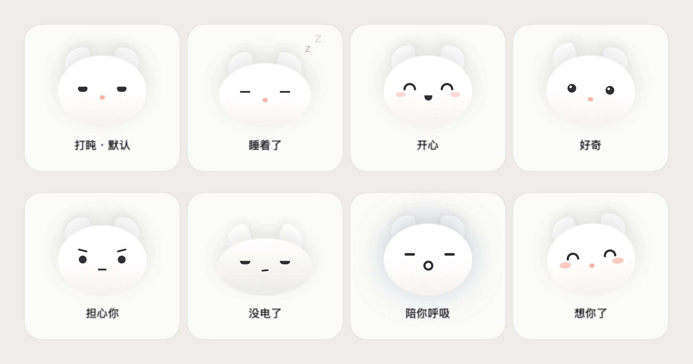

Sleep earlier. Drink more water. Have somewhere to put a bad day, and someone to remember what I forget. I knew all this. I just couldn't do it.
So I built myself a cat.
It's called dozycat. It doesn't do my work — it looks after me.
There was no ceremony the day it arrived. It settled in the bottom-right corner of the screen, rising and falling with its breath, blinking now and then.
I soon realized the cat itself is the gauge1: the longer I sit, the droopier it gets; when I stay up late, it sleeps badly too; when I come back from a walk, its ears perk up.

When did that toothache start? Which folder keeps the photo with Fanshu? Questions like these used to end in "never mind."
Now ⌥ Space is me handing it a case. It pins whatever it digs up onto a board — a photo from March, a birthday plan from June, yesterday evening's walk — then pulls one red thread through the pins until the scattered days tell a single story2.
Ask it a full question and it goes one step further: evidence listed, reasoning laid out, and at the end a coral stamp — so rules the cat. The case file is archived; even the Book may quote it.

Then I discovered it was writing a book. About me — titled Vertical Time. Data as material, days as chapters, a new installment on the first of every month3.
Every chapter carries its margin note. Chapter eight, "Impacted," is about the two impacted wisdom teeth I had pulled in July — one buried whole in the bone; at the head of it the cat wrote: "we'll see" has now lasted two months; this cat remains watchful. On update day it hands the new chapter to my desktop and asks: read it now, or before bed?

Dozing is the default. Stay up late and it worries; run empty and it flattens out; ignore it for hours and it tilts its head at you.

After 11pm the screen dims, gently. It counts out the three small things I managed today, breathes with me for three minutes, and says goodnight. In the morning, it wakes me softly.